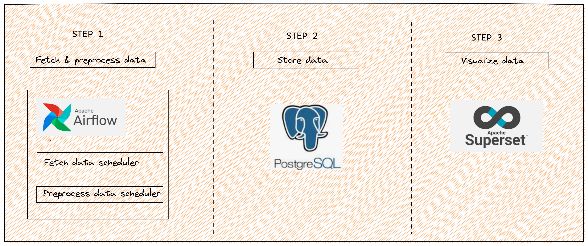
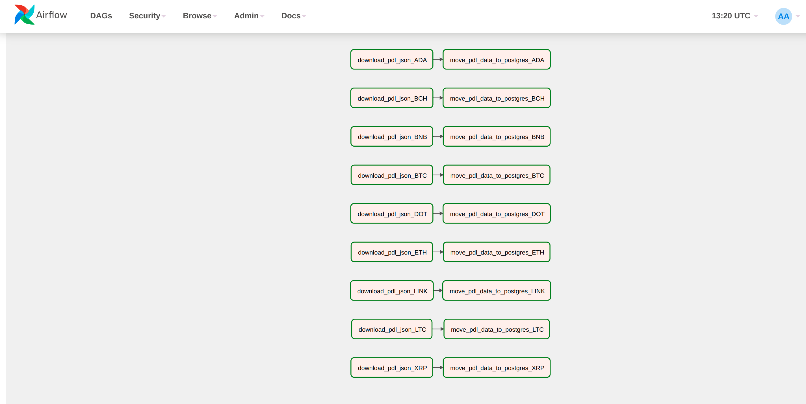
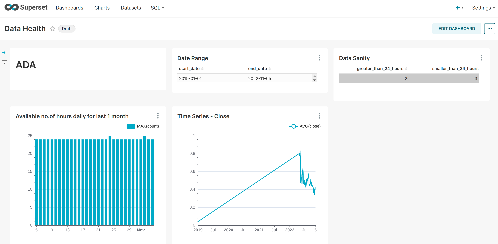

Monitor your data using Dockerized PostgreSQL, Airflow & Apache Superset
The Data You Know; The Story You Don’t
- toc: true
- badges: true
- comments: true
- categories: [jupyter]
- image: images/chart-preview.png
TL;DR
In this blogpost I will talk about a data monitoring system that I built to monitor the quality and availibility in real time. The system has an Airflow to schedule jobs, PostgreSQL to store data and Superset to visualize the data and monitor its quality.
Through this system I monitored the data quality, data consistency, data drift etc. This system enables you to take actions like - identifying discrepancies in ETL pipeline if expected data is missing, anomaly in the data that is causing the business objective to fail and many more.
Steps
I will first setup a list of tasks that will enable me to monitor data. This is done using Airflow where tasks run to gather the data of interest.
I will store the processed data into a PostgreSQL database.
The data will be visualized and monitored using Superset dashboard.
What does the high level architecture look like?

Setting up PostgreSQL, Airflow and Superset
1. Docker PostgreSQL
docker pull postgres
docker run --name <name_of_container> -e POSTGRES_USER=<username> -e POSTGRES_PASSWORD=<password> -p 5432:5432 -v /data:/var/lib/postgresql/data -d <db_name>2. Docker Airflow
Run the below instructions inside the repo where your your python code resides.
curl -LfO 'https://airflow.apache.org/docs/apache-airflow/2.4.1/docker-compose.yaml'
mkdir -p ./dags ./logs ./plugins
echo -e 'AIRFLOW_UID=$(id -u)' > .env
docker-compose up airflow-init3. Docker Superset
git clone https://github.com/apache/superset.git
cd superset
docker-compose -f docker-compose-non-dev.yml pull
docker-compose -f docker-compose-non-dev.yml upHow do you go about scheduling a task using Airflow?
According to official documentation: > Apache Airflow is an open-source platform for developing, scheduling, and monitoring batch-oriented workflows.
The below steps ensure that you have an up and running job scheduled at regular intervals:
- Define a function to fetch data from the API or from S3 or any other source
def download_api_data():
print(f"Fetching data....")
response = requests.get(<API url>)
data = response.json()
print(f"Total number of data: {len(data)}")
json_object = json.dumps(data, indent=2)
with open(f"/tmp/pdl_{currency}_hourly.json", "w") as f:
f.write(json_object)
print(f"Finished downloading data.....")The above function fetches data from the API and then stores it as json file for further processing.
- Define a function to move downloaded data(json, csv etc.) to PostgreSQL
def move_pdl_data_to_postgres(**kwargs):
currency = kwargs["currency"]
print(f"Populating for {currency} has started")
with open(f"/tmp/pdl_{currency}_hourly.json") as f:
data = json.load(f)
df = pd.DataFrame(data)
# Define your preprocessing steps here like typecasting a column according to the Postgresql schema and any other steps specific to your use case
print("All values created, starting the push to db")
df.to_sql(name="<name-of-sql-table>", con=engine, index=False, if_exists="append", chunksize=300)In the above function we load the json data downloaded in step 1 inside a dataframe and then move it to PostgreSQL table, defined in our con parameter of to_sql function.
- Define a
DAG
- DAG object is needed to define how we are going to schedule our various tasks.
- Here we pass a string that defines the dag_id, which serves as a unique identifier for your DAG and also description.
- We also schedule a DAG using
schedule_intervalparameter to run it at hourly frequency and also provide start_date of the DAG. - Below is an example of the DAG definition:
dag = DAG(
dag_id="data-migration",
description="Daily data monitoring pipeline",
schedule_interval="0 * * * *",
start_date=datetime(2022, 10, 17),
)- Define
PythonOperator
- Operators are tasks that define a unit of work to be done.
- There are manny different kind of operators that you can play around with in Airflow. But we will stick to
PythonOperator, which takes python function as a parameter. - Here we define the
task_id,python_callableand above defineddagobject. - Below is how we define the
PythonOperatorobject
PythonOperator(
task_id=f"download_json",
python_callable=download_json,
dag=dag,
)- Setup task dependencies
Lets say we have 2 PythonOperator defined as 2 tasks and one task is dependent on the other. In our case we first fetch the data from API and then push the data to PostgreSQL. So setting up task dependency kind of becomes and it is defined by using >> operator as follows:
task1 >> task2Here the Airflow DAG knows that it has to first finish running the task1 and then move on to task2. Any failure in task1 will result in termination of the job.
What is the Airflow UI going to look like?

The above UI can be accessed after Airflow login and navigating as follows: <DAG-name> > Graph.
The Graph shows you the various tasks that are scheduled to run and each row defines multiple tasks and how each one is dependent on the other i.e Task move_pdl_data_to_postgres_ADA is dependent on download_pdl_json_ADA and hence has to be completed first.
The subsequent rows follow a similar pattern and here we have demonstrated multiple different jobs scheduled inside a single DAG, where each job does the same thing as other, but for different type of data i.e for different bitcoin currencies in our scenario.
How to visualize the raw data in Apache Superset?

- Superset is a data exploration and visualization platform and we are going to leverage it to use it as our frontend for monitoring the data we move to the PostgreSQL at regular intervals.
- As seen in the above example dashboard we are doing some sanity check and checking the trend for a bitcoin currency.
- So playing around with visualizations specific to your data and problem statement is straight forward in Superset and it comes with a bunch of features.
What next?
This task can be further expanded in various aspects each from PostgreSQl, Airflow and Superset perspective, by adding more sources of information that we want to monitor in real time and keep adding more tables to our PostgreSQL database, schedule more DAGs in our Airflow container and add more dashboards monitoring the nature of different data.